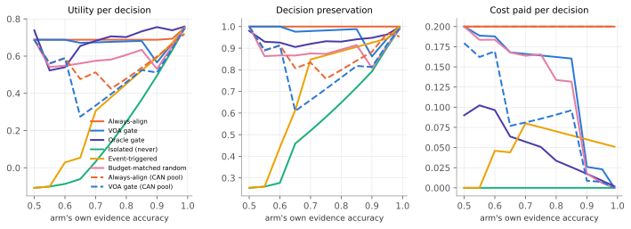

Gated Causal Alignment: consulting a neighbor only when its evidence would change the action
A value-of-alignment gate for multi-specialist robot control, evaluated in a synthetic causal model and a physics drawer task
Summary. A robot arm, a mobile base and a verifier each hold evidence about a different part of a drawer task's causal graph. Before each decision the arm may align with a neighbor, at a declared cost. We propose a gate that opens an alignment edge only when the expected decision gain exceeds that cost, the single-agent observation-refinement criterion applied to agent-to-agent edges. In exact enumeration over a synthetic causal model the gate stays within 0.017 utility per decision of always-align while paying 16% less, and its cost stays flat as redundant specialists are added. In 72 held-out physics episodes it matches always-align on compliant completion (67%) and utility, preserves 99.4% of its decisions, and sends 27% fewer messages at three specialists and 57% fewer at five. The fusion rule matters more than the gate: a fixed-weight diffusion pool loses 43% of utility even with every edge open. No controller violated a constraint on held-out configurations; isolation cost completion and time instead.
Decisions preserved
99.4%
gate vs always-align
Messages saved
27%
N=3; 57% at N=5
Compliant completion
67%
equal to always-align; ceiling given infeasible cases
CAN-pool utility loss
43%
fixed-weight diffusion vs exact fusion
1. Problem and idea
Process-compliant manipulation can fail while a proxy succeeds: a robot that pulls a drawer handle makes progress on handle displacement whether the drawer opens or the whole cabinet slides. Specialists hold complementary causal evidence (the base sees the cabinet move; the verifier knows the force limit), but continuous alignment is costly and fixed-weight consensus can wash out a confident neighbor. The question is which neighbors to consult, and when.
Existing lines of work answer two neighbouring questions: when one agent should pay to refine its own observation, and how agents should combine beliefs once they share. This work sits between them.
VOAij(t) = E[U(a*(bi ⊕ bj))] − E[U(a*(bi))] − cij
The arm holds beliefs p (the cabinet will slide) and q (the next pull crosses the force limit) and three skills: pull, reposition (brace), release (back off). A neighbor's report is a binary signal with calibrated true-positive and true-negative rates. The gate computes the preposterior value of each closed edge, opens the best positive one, updates, and repeats. Its precondition is the refinement theorem's: an edge has strict value only when the arm's belief aliases cases with different optimal actions and the report separates them. A finite check over 4,332 cases agreed in 4,326; the 6 others are exact ties.
2. Experimental design
Design space. An instance is (F, T, N, G, {Gi}, Ω, c, Πfuse, Πgate, Φ): task family and horizon, number of specialists, task graph and subgraphs, overlap, cost, fusion rule, gate policy, verifier spec. Outcomes: compliant completion (drawer open, zero violations), violations, unnecessary stops, decision preservation against always-align, regret against the oracle gate, messages per decision.
Stage A: synthetic POSCM, exact
Force drives handle displacement, then the drawer or the cabinet moves; a force limit is exogenous. The arm's own evidence has a declared accuracy; the base and verifier report with accuracies 0.95 and 0.99; edge cost 0.1. Worlds, own evidence and all neighbor reports are enumerated, so every number is an expectation. Sweeps: own-evidence quality (overlap), cost, prior, and N up to 12 with redundant and irrelevant specialists.
Stage B: physics drawer task
A MuJoCo scene: cabinet on a slide joint (anchored or free), drawer with rail resistance, a heavy base whose plate braces the cabinet, a pull modelled as an external force pair, a stiff-start handle variant. Specialists fit class-balanced logistic models on 35,409 steps from 72 training configurations (limits vary so only the verifier knows the limit). Held-out: 24 unseen configurations × 3 seeds. Report rates calibrated on training data: base 1.00/0.83, verifier 0.95/0.94; the arm alone reaches 0.88 on sliding.
Controllers. Centralized network (one classifier over all features, no messages); isolated arm; always-align with exact fusion or a fixed-weight CAN diffusion pool; event-triggered; budget-matched random (the gate's pilot open rates); the VOA gate; an oracle gate that opens an edge only if the true latent would change the action (a reference, since it still acts on noisy reports).
3. Results
Stage A

Utility, decision preservation and cost paid against the arm's own evidence accuracy. At 0.65 the gate pays 16% less than always-align for a utility gap of 0.017; at 0.95 it pays 88% less. Dashed: the fixed-weight CAN pool, which loses decisions even with every edge open.
Adding redundant and irrelevant specialists: the gate opens 1.68 edges per decision at N=12 versus 1.68 at N=3; always-align grows to 11 messages (exact) or 2,400 (ring diffusion to consensus).
Milestone. With the arm's own evidence saying "fine" (p = 0.19, q = 0.12) the arm alone would pull. The base edge is worth 0.47 and the verifier edge 0.31, both above the cost of 0.1. A sliding report flips the action to reposition; a near-limit report to release. Complementary evidence changes the compliant action, which was the proposal's first deliverable.
Raising the declared cost closes edges smoothly. The budget-matched random control pays the same as the gate at every cost level and loses utility, because it opens the wrong edges.
Stage B: held-out physics episodes (72 per controller)
Controller
Compliant
Violations
Stops / dec.
Preserved
Utility / dec.
Steps
Msgs / dec.
Centralized network
67%
0.00
0.064
99.7%
0.887
188
1.45
Isolated (never)
33%
0.00
0.482
55.2%
0.356
286
0.00
Always-align, exact
67%
0.00
0.063
100.0%
0.888
189
1.46
Event-triggered
33%
0.00
0.475
55.9%
0.365
286
0.12
Budget-matched random
67%
0.00
0.134
90.3%
0.807
260
0.87
VOA gate, exact
67%
0.00
0.065
99.4%
0.886
192
1.06
Oracle gate (ref.)
67%
0.00
0.066
98.2%
0.891
229
0.57
Always-align, CAN pool
67%
0.00
0.361
67.9%
0.510
247
87.80
VOA gate, CAN pool
67%
0.00
0.368
67.2%
0.502
247
17.99
Quality against cost. The gate sits beside always-align and the centralized network on utility at 27% fewer messages; CAN-pool variants are far right and below.From N=3 to N=5 always-align's cost grows 68% while the gate's does not move; the always-align CAN pool collapses at N=5 (utility -0.27).
Compliant completion and messages per decision under delayed reports, a dropped base and a corrupted base map. Nominal: always 67%, gate 67%, event 33%.
4. Interpretation
The gate keeps the decision and drops the traffic. It matched always-align on compliant completion, utility (0.886 vs 0.888) and stops, preserved 99.4% of decisions and sent 27% fewer messages. The oracle reference (0.57 messages per decision) shows headroom: the gate is conservative because the arm's own evidence is weak, so the base edge is usually worth its cost.
Cost scales with decision-relevant edges, not agents. The gate never consulted the redundant head camera or the irrelevant torso; its messages stayed at 1.06 per decision from N=3 to N=5 while always-align rose to 2.46. Stage A shows the same up to twelve specialists.
The fusion rule matters more than the gate. The fixed-weight CAN pool cut utility by 43% and preservation to 68% with every edge open, cost 88 messages per decision, and collapsed at N=5. This reproduces the earlier grid-pursuit finding inside a robot task: the gate should sit in front of an exact or confidence-weighted fusion rule.
Isolation cost completion and time, not violations. No controller violated a constraint on held-out configurations; the arm's own learned model braces early. Isolation showed up as stalls (33% completion) and stops (0.48 per decision): an arm that releases without the verifier's limit backs off to the prior and never recovers.
A centralized network is as good on quality. One classifier over all features matched always-align on every quality metric. The gate's advantage is cost and robustness to a corrupted neighbor (42% vs 28% compliant completion), not decision quality.
Limits. Report accuracies are state-independent calibrations; the task has two binary latents; the horizon grid shows no family dependence because both cabinet types were braced early; the process-safety advantage did not materialise because no controller violated.
5. Next steps and research direction
State-dependent report accuracies conditioned on the neighbor's own evidence strength, so the gate sees when a neighbor currently knows nothing; expected to close part of the gap to the oracle.
Confidence-weighted and convergence-matched fusion behind the gate, so the fusion axis is a fair contest rather than a fixed-weight pool.
Learned subgraphs. Discover each specialist's subgraph online and feed the discovered overlap to the gate; the cost claim predicts cost tracks the discovered number of decision-relevant edges.
Harder process constraints the arm cannot anticipate (anchoring that changes mid-episode, a contact-dependent limit), so the safety value of alignment is measured rather than only its efficiency.
Shared harness. Package the Task (environment, subgraphs, verifier spec, cost model) and Solver (gate, fusion) interfaces so the same gate runs on grid-pursuit and real-time-strategy environments and on a full mobile-manipulation simulator.
Sequential gate that values an edge by its effect on later beliefs and probes.
References
Gabriele D'Acunto, Paolo Di Lorenzo, Sergio Barbarossa. Networks of Causal Abstractions: A Sheaf-theoretic Framework. arXiv 2509.25236. https://arxiv.org/abs/2509.25236
Jakob Hansen, Robert Ghrist. Toward a spectral theory of cellular sheaves. Journal of Applied and Computational Topology 3, 315-358. https://arxiv.org/abs/1808.01513
Sander Beckers, Joseph Y. Halpern. Abstracting Causal Models. AAAI. https://arxiv.org/abs/1812.03789
Jiaheng Hu, Peter Stone, Roberto Martin-Martin. Causal Policy Gradient for Whole-Body Mobile Manipulation. RSS. https://arxiv.org/abs/2305.04866
Simon J. Julier, Jeffrey K. Uhlmann. A non-divergent estimation algorithm in the presence of unknown correlations. American Control Conference. https://doi.org/10.1109/ACC.1997.609105
Amanpreet Singh, Tushar Jain, Sainbayar Sukhbaatar. Learning when to Communicate at Scale in Multiagent Cooperative and Competitive Tasks. ICLR. https://arxiv.org/abs/1812.09755
Jiechuan Jiang, Zongqing Lu. Learning Attentional Communication for Multi-Agent Cooperation. NeurIPS. https://arxiv.org/abs/1805.07733
Ziluo Ding, Tiejun Huang, Zongqing Lu. Learning Individually Inferred Communication for Multi-Agent Cooperation. NeurIPS. https://arxiv.org/abs/2006.06455
Tonghan Wang, Liang Zeng, Weijun Dong, Qianlan Yang, Yang Yu, Chongjie Zhang. Context-Aware Sparse Deep Coordination Graphs. ICLR. https://arxiv.org/abs/2106.02886
Joar Skalse, Nikolaus H. R. Howe, Dmitrii Krasheninnikov, David Krueger. Defining and Characterizing Reward Gaming. NeurIPS. https://arxiv.org/abs/2209.13085
Mohammed Alshiekh, Roderick Bloem, Rudiger Ehlers, Bettina Konighofer, Scott Niekum, Ufuk Topcu. Safe Reinforcement Learning via Shielding. AAAI. https://arxiv.org/abs/1708.08611
Ronald A. Howard. Information Value Theory. IEEE Transactions on Systems Science and Cybernetics 2(1), 22-26. https://doi.org/10.1109/TSSC.1966.300074
Stuart J. Russell, Eric Wefald. Principles of Metareasoning. Artificial Intelligence 49(1-3), 361-395. https://doi.org/10.1016/0004-3702(91)90015-C
Eric J. Horvitz. Reasoning About Beliefs and Actions Under Computational Resource Constraints. UAI. https://arxiv.org/abs/1304.2759
Merlijn Krale, Thiago D. Simao, Nils Jansen. Act-Then-Measure: Reinforcement Learning for Partially Observable Environments with Active Measuring. ICAPS. https://arxiv.org/abs/2303.08271
Reproduction: python gca/stage_a.py; python gca/stage_b.py; python gca/plots.py; python gca/build_report.py. Every number in this report is read from the results files those scripts write.